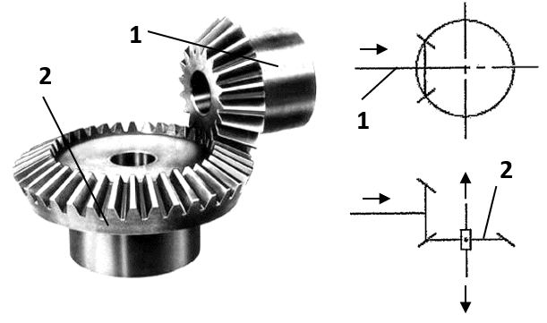
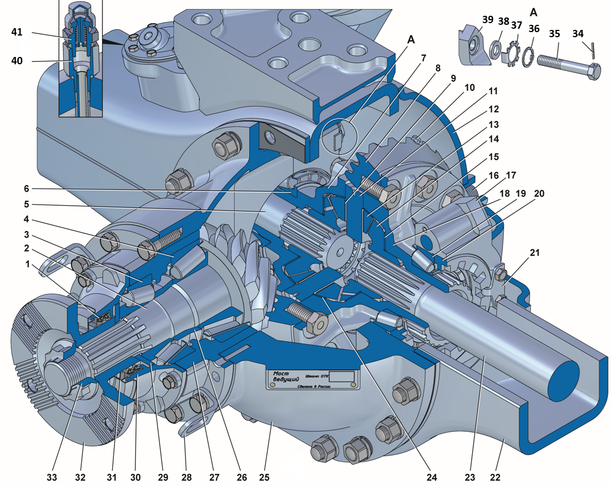
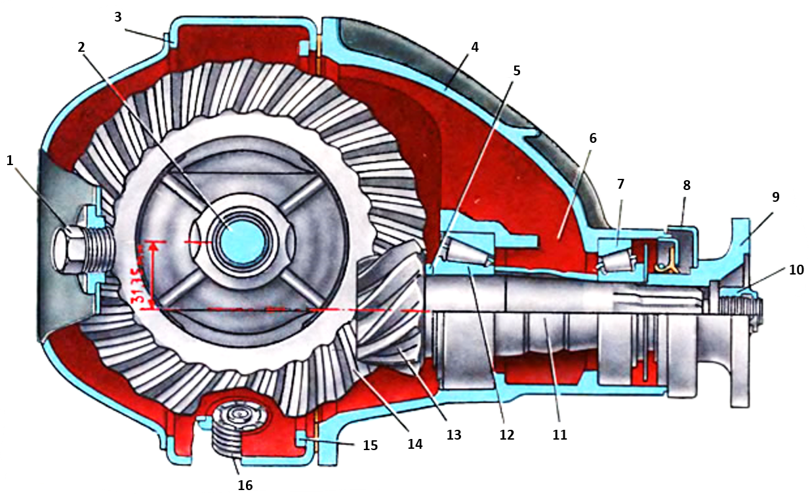
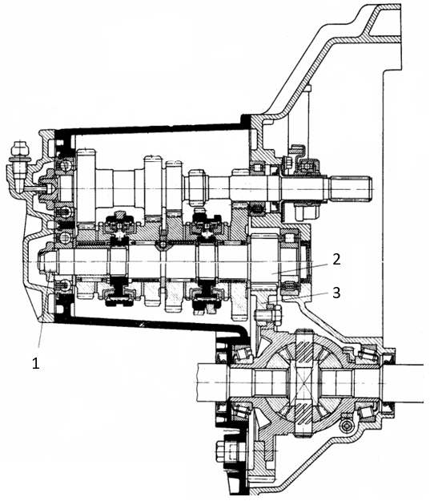
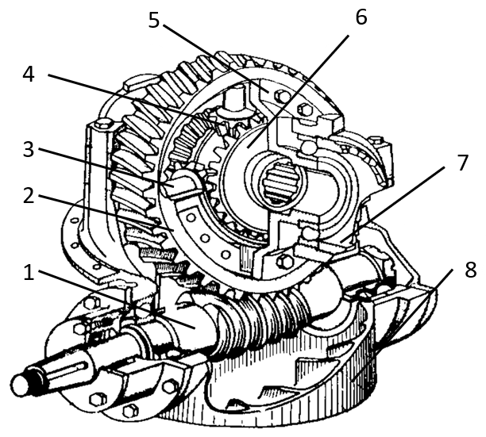
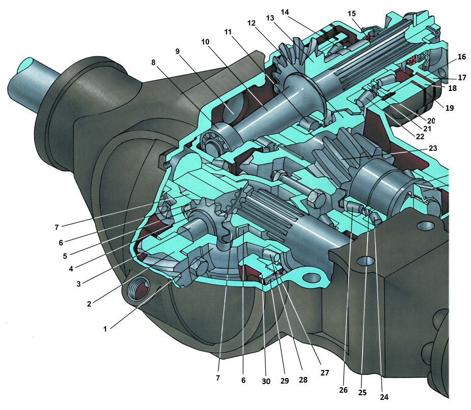
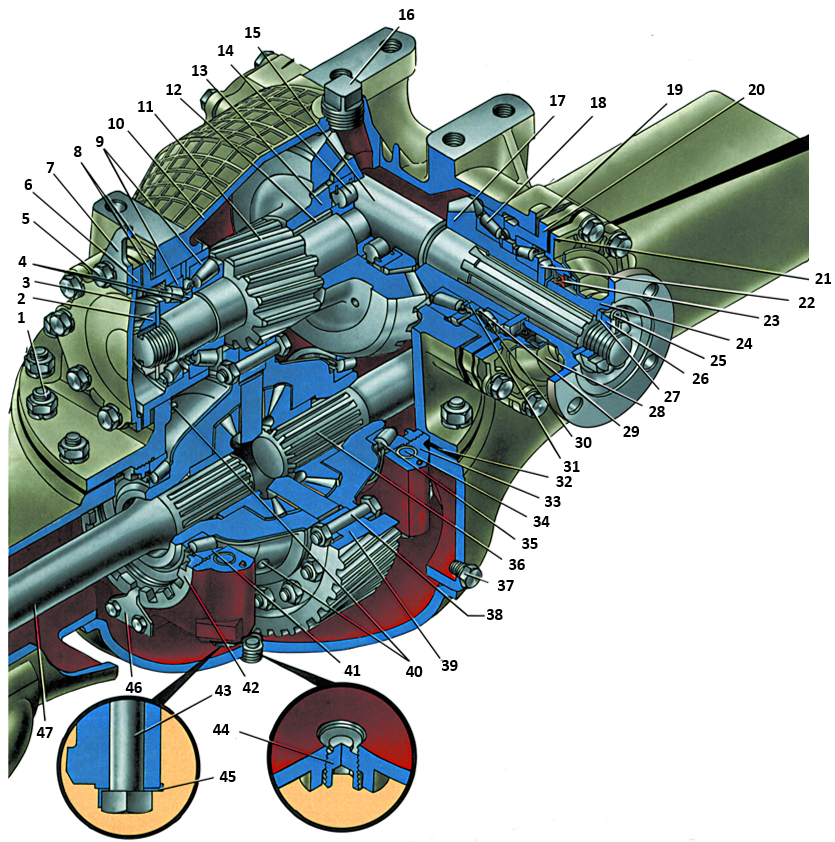
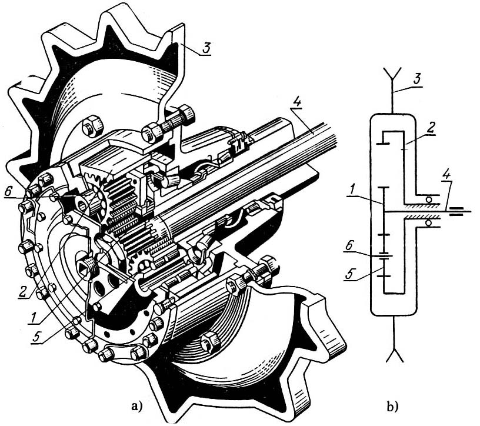
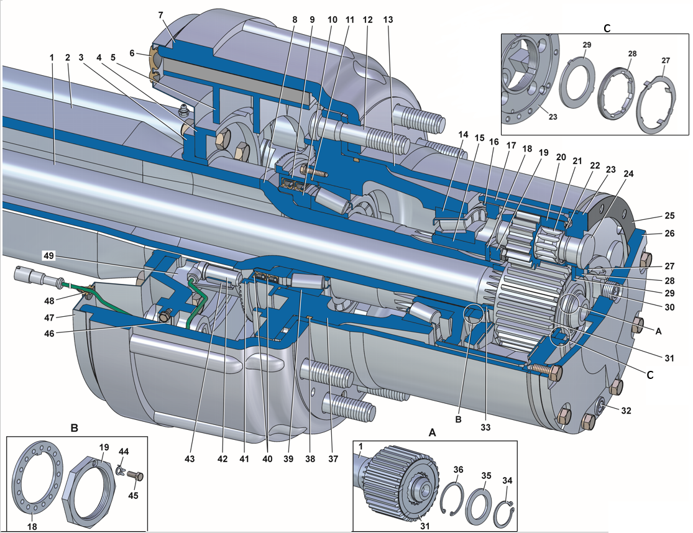

a. Truyền lực chính đơn
Bộ truyền lực chính bánh răng côn
Bộ truyền lực chính bánh răng côn thể hiện trên Hình 7.1a, bao gồm một bánh răng côn dẫn động (bánh răng quả dứa) ăn khớp với bánh răng vành khăn (bánh răng vành chậu). Trong quá trình làm việc, mô men xoắn được truyền qua cặp bánh răng côn ăn khớp của truyền lực chính làm thay đổi phương quay của mô men xoắn trong hệ thống truyền lực. Sau đó, bộ vi sai nhận mômen xoắn nhờ vỏ vi sai lắp chặt với bánh răng bị động của truyền lực chính và phân phối mô men xoắn đến các bán trục ra bánh xe chủ động.
Bộ truyền lực chính bánh răng côn bao gồm ba loại: loại bánh răng côn thẳng, loại bánh răng côn xoắn và loại truyền động hypoit.
* Loại bánh răng côn răng thẳng
Loại truyền lực chính này gồm bánh răng côn chủ động và bánh răng côn bị động Hình 7.2 Bánh răng côn chủ động được chế tạo liền trục. Bánh răng côn bị động được chế tạo rời sau đó được lắp ghép cố định với vỏ vi sai bằng các bu lông. Thông thường cặp bánh răng côn răng thẳng được bố trí dưới một góc 900.
Truyền lực chính bánh răng côn thẳng hiện nay ít được sử dụng trên ô tô nhưng nó là cơ sở để chế tạo các loại truyền lực chính bánh răng côn xoắn và loại truyền động hypoit. Truyền lực chính bánh răng côn thẳng có ưu điểm là đơn giản, dễ chế tạo, giá thành thấp và trong quá trình lắp ráp không yêu cầu quá cao về ăn khớp của các bánh răng.
Tuy nhiên, khỉ muốn tỉ số truyền lớn thì kích thước bánh răng bị động lớn thông thường lớn hơn 8 đến 9 răng nếu bé hơn thì sẽ xảy ra hiện tượng cắt chân răng do đó làm tăng kích thước của cầu chủ động, làm việc ồn. Ngoài ra cặp bánh răng nón răng thẳng làm việc không được êm dịu, nhất là khi xe chạy ở tốc độ cao ồn nhiều, khả năng chịu tải kém nên hiện nay ít được sử dụng.

Hình 7.2. Bộ truyền lực chính bánh răng côn răng thẳng
1- Bánh răng côn chủ động; 2- Bánh răng côn bị động
* Loại bánh răng côn răng xoắn
Loại truyền lực chính này dùng phổ biến trên ô tô du lịch, ô tô tải nhỏ và trung bình. Đặc điểm cấu tạo được thể hiện trên Hình 7.3 Truyền lực chính bao gồm một cặp bánh răng côn xoắn. Trục chủ động 2 chế tạo liền với bánh răng côn xoắn chủ động và được gối trên vỏ bằng hai ổ bi côn. Khoảng cách và cách bố trí hai ổ côn có ảnh hưởng đến độ cứng vững của trục chủ động. Thông thường hai ổ bi côn được bố trí theo chiều như trên hình vẽ sao cho khoảng cách giữa hai tâm chịu lực thực tế là lớn. Bánh răng bị động 8 được chế tạo rời thành vành răng rồi lắp ghép cố định với vỏ bộ vi sai 7,18 bằng các bulông. Trong vỏ bộ vi sai có lắp đặt các trục 11 và bánh răng vi sai 13, hai bánh răng bán trục 14, các đệm tựa 15, 24 cho các bánh răng vi sai và bánh răng bán trục. Số răng bánh răng chủ động có thề giảm tới 5 mà bộ truyền vẫn ăn khớp tốt và đủ bền, tăng được tỉ số truyền khi cùng kích thước với bánh răng bị động của truyền lực chính bánh răng côn răng thẳng. Làm việc êm dịu ngay cả khi tốc độ quay lớn nhờ đó mà có thể sừ dụng được cả với động cơ cao tốc.
Truyền lực chính bánh răng côn xoắn do có độ cong của các răng và số lượng răng vào ăn khớp lớn nên chúng làm việc êm, khả năng truyền lực và mô men lớn, có độ bền cao, khả nàng chống mòn tốt, đồng thời yêu cầu một tỷ số truyền xác định nó sẽ cho kích thước nhỏ gọn, trọng lượng nhỏ hơn so với loại truyền lực chính bánh răng côn thẳng.

Hình 7.3. Bộ truyền lực chính bánh răng côn xoắn
1- Vòng bít làm kín; 2- Trục chủ động; 3,4,19- Vòng cách ngoài; 5,23- Bán trục; 6- Vòng cách trong; 7,18- Vỏ vi sai; 8- Bánh răng bị động; 9,13- Bánh răng vi sai; 10- Lỗ thoát nhiệt; 11- Trục bánh răng vi sai; 12,22,25,39- Vỏ cầu; 14- Bánh răng bán trục; 15,24- Đệm điều chỉnh; 16- Bu long; 17- Mặt bích; 20,33- Đai ốc điều chỉnh; 21- Tấm định vị đai ốc điều chỉnh; 26- Bạc chặn; 27- Cốc; 28- Tấm thép; 29- Tấm chặn; 30- Đầu chụp; 31- Vỏ chụp; 32- Mặt bích liên kết với các đăng; 34- Chốt; 35- Bu long; 36- Đệm khóa; 37,38- Đệm; 40,41- Đai ốc.
Loại bộ truyền bánh răng côn xoắn có nhược điểm như sau: Khi ăn khớp phát sinh lực dọc trục lớn, nếu hướng xoắn của răng trên trục chủ động trùng với chiều quay của trục thì lực dọc trục sẽ có chiều từ đáy lên đỉnh bánh răng côn, gây nên hiện tượng kẹt bánh răng. Vì vậy trong trường hợp ô tô chuyển động tịnh tiến bánh răng côn chủ động có chiều quay phải thì hướng xoắn của bánh răng chủ động phải xoắn trái. Như thế khi chuyển động lùi thì hướng xoắn và chiều quay lại trùng nhau nên lực chiều trục sẽ hướng về phía có khuynh hướng làm kẹt răng nhưng vì thời gian chuyển động lùi ngắn nên loại bánh răng vẫn được dùng.
Khi chế tạo bánh răng côn răng xoắn, nhà chế tạo cố tạo ra điều kiện các răng ăn khớp theo vùng nghĩa là khi ăn khớp hai bánh răng sẽ tiếp xúc theo phạm vi trên răng mà không phải toàn cả răng. Muốn như vậy bán kính cong của bánh răng chủ động được chế tạo bé hơn bán kính cong của bánh răng chủ động một ít như thế các răng tiếp xúc nhau chỉ ở phần giữa. Bán kính cong được chọn khoảng gần một nửa chiều dài răng. Còn khi tải trọng lớn thì xẽ tiếp xúc cả chiều dài răng, nếu được như vậy khi có sự dịch chuyển tương đối một khoảng nhỏ của hai bánh răng thì vùng ăn khớp chỉ dịch chuyển từ giữa răng ra phía này hay ra phía kia một chút.
* Loại bộ truyền Hypoit

Hình 7.4. Bộ truyền lực chính Hypoit
1- Đai ốc châm dầu; 2- Bán trục; 3,4,6,15- Vỏ cầu; 5,11- Trục chủ động; 7- Vòng cách ngoài; 8- Vỏ chụp; 9- Mặt bích liên kết các đăng; 10- Đai ốc điều chỉnh; 12- Vòng cách trong; 13- Bánh răng chủ động; 14- Bánh răng bị động; 16- Đai ốc xả dầu.
Đặc điểm cấu tạo được thể hiện trên Hình 7.4, ở truyền lực chính đơn Hypôit bánh răng côn chủ động được đặt lệch trục so với bánh răng côn bị động. Giá trị độ lệch trục nằm trong khoảng (0,125 - 0,2 ) đường kính bánh răng bị động. Trục bánh răng chủ động có thể đặt ở trên hoặc ở dưới so với đường tâm bánh răng bị động. Các răng của các bánh răng truyền lực chính Hypôit là răng cong có góc nghiêng đường răng khác nhau. Góc nghiêng đường răng bánh răng chủ động (450-500) lớn hơn góc nghiêng đường răng bánh răng bị động (200-300). Do góc nghiêng đường răng lớn nên độ dài răng của bánh răng truyền lực chính Hypôit lớn hơn so với truyền lực chính bánh răng côn xoắn cùng kích thước. Truyền lực chính Hypôit làm việc êm hơn và có kích thước nhỏ gọn hơn khi cùng tỷ số truyền so với truyền lực chính bánh răng côn xoắn. So với truyền lực chính bánh răng côn xoắn thì truyền lực chính đơn Hypôit có sự trượt tương đối tại vùng ăn khớp khá lớn (có cả trượt ngang lẫn trượt dọc bề mặt răng khi ăn khớp). Do vậy để khắc phục nhược điểm này người ta dùng dầu bôi trơn chuyên dùng cho truyền lực chính Hyppoit (gọi là dầu bôi trơn Hypôit) và đảm bảo độ chính xác lắp ráp cao, điều chỉnh đúng trong quá trình sử dụng.
Loại này có một số ưu điểm như sau:
- Chạy êm dịu hơn vì số răng ăn khớp nhiều hơn;
- Khả năng chịu tải cao hơn vì đường kính và bề rộng răng của bánh răng côn chủ động lớn hơn.
- Cần ít không gian hơn vì bánh răng côn bị động có kích thước nhỏ hơn khi chịu cùng tải. Nhờ vậy, trục các đăng có thể lắp ở vị trí thấp hơn trên xe động cơ đặt phía trước cầu sau chủ động.
- Nhờ độ lệch trục mà có thể nâng hoặc hạ chiều cao trọng tâm xe, giảm góc nghiêng trục các đăng và tăng tính êm dịu của cặp truyền lực bánh răng.
Bên cạnh đó loại này có một số nhược điểm như sau:
- Đòi hỏi phải lắp ráp chính xác và bánh răng côn chủ động phải có điểm tựa chắc chắn.
- Làm tăng sự trượt dọc của bánh răng truyền lực chính xuất hiện tại các điểm tiếp xúc mặt hông răng lớn hơn so với trường hợp không lệch trục, gây ra hiện tượng chóng mòn răng. Do vậy cần phải bôi trơn bằng dầu hypoit chuyên dùng có độ bền nén và độ bền cắt đặc biệt.
Bộ truyền lực chính bánh răng trụ
Loại này thường được sử dụng trên các ôtô du lịch động cơ đặt trước và cầu trước chủ động (thường chế tạo liền một cụm với động cơ và hộp số). Cấu tạo của bộ truyền lực chính này được mô tả trên Hình 7.5
Truyền lực chính và vi sai được bố trí kết hợp với hộp số thành một khối. Vì động cơ đặt ngang nên tâm trục hộp số song song với tâm trục cầu trước có nghĩa là hướng truyền lực từ trục ra hộp số đến trục vào của truyền lực chính là song song với nhau nên truyền lực chính sử dụng cặp bánh răng trụ. Bánh răng chủ động truyền lực chính là loại bánh răng trụ răng nghiêng. Bánh răng này được ăn khớp với bánh răng trụ bị động răng ngiêng và lắp trên vỏ hộp số ngang qua hai vòng bi bán trục. Bán trục ăn khớp với then hoa trong của bánh răng bán trục. Thường có hai bánh răng vi sai để dẫn động, nhưng ở các bộ vi dùng cho các động cơ có công suất cao thường dùng bốn bánh răng vi sai.

Hình 7.5. Bộ truyền lực chính bánh răng trụ
1- Trục bị động họp số; 2- Bánh răng trụ chủ động truyền lực chính; 3- Bánh răng trụ bị động truyền lực chính
Bộ truyền lực chính trục vít-bánh vít
Đặc điểm cấu tạo bộ truyền trục vít được biểu diễn trên Hình 7.6, truyền động trục vít được sử dụng ở một số loại ô tô buýt, ô tô 3 cầu và một số loại ô tô du lịch có công suất nhỏ. Trục vít có thể được đặt trên hoặc dưới bánh vít. Bộ truyền lực chính loại này có những ưu nhược điểm sau:
- Ưu điểm:
+ Có khả năng làm việc êm dịu, có kích thước và trọng lượng nhỏ nhưng tỉ số truyền lớn.
+ Cho phép đặt bộ vi sai ở giữa cầu, nhờ đó mà cầu có kết cấu đối xứng, đối với ô tô 3 cầu có khả năng truyền mô men xoắn đến 2 cầu chủ động bằng một trục.
+ Khi đặt trục vít xuống dưới có thể hạ thấp được trọng tâm ô tô.
- Nhược điểm:
+ Hiệu suất truyền động thấp, đòi hỏi lắp ráp thật chính xác, nếu lắp ráp không chính xác thì hiệu suất càng thấp và trục vít chóng mòn.
+ Khi đặt trục vít xuống dưới khoảng sáng gầm xe giảm và làm tăng góc nghiêng của trục các đăng, nếu đặt trục vít lên trên việc bôi trơn cho cặp trục vít, bánh vít khó khăn.
+ Chế tạo phức tạp, giá thành cao.

Hình 7.6. Bộ truyền lực chính trục vít-bánh vít
1- Trục vít; 2- Bánh vít; 3- Trục bánh răng vi sai; 4- Bánh răng vi sai; 5- Vỏ vi sai; 6- Bánh răng mặt trời; 7- Đai ốc điều chỉnh; 8- Vỏ cầu.
b. Truyền lực chính kép
Bộ truyền lực chính kép tập trung
Truyền lực chính kép được sử dụng trên những xe ô tô cần có tỉ số truyền của truyền lực chính lớn mà vẫn đảm bảo được kích thước của cầu xe gọn. Truyền lực chính kép gồm hai cặp bánh răng, một cặp bánh răng côn và một cặp bánh răng trụ. Trong truyền lực chính kép các cặp bánh răng côn và trụ cùng đặt trên vỏ của dầm cầu. Bộ vi sai được đặt sau cặp bánh răng trụ. Trục trung gian và bán trục (trục bị động) có thể đặt trong mặt phẳng nằm ngang Hình 7.7, hoặc trong mặt phẳng thẳng đứng Hình 7.8 để đảm bảo truyền mô men xoắn từ cầu giữa ra cầu sau bằng một trục các đăng.
Trên bộ truyền lực chính Hình 7.7. Bánh răng côn trên trục trung gian 12 được lắp ghép cố định với trục bằng mối ghép then bằng. Bánh răng trụ 23 được chế tạo liền trục với trục trung gian và luôn ăn khớp với bánh răng trụ bị động 2. Đầu phía trong trục trung gian được gối bằng ổ bi đỡ trụ và đầu phía ngoài được đỡ bằng hai ổ đỡ côn để gia tăng độ cứng vững cho trục. Bánh răng trụ bị động 2 là một vành răng được lắp ghép cố định với hai phần vỏ bộ vi sai bằng các bu lông.

Hình 7.7. Truyền lực chính kép loại tập trung
1,6- Vỏ bộ vi sai; 2- Bánh răng trụ bị động; 3- Trục bánh răng vi sai; 4- Đệm điều chỉnh; 5- Bánh răng vi sai; 7- Bánh răng bán trục; 8,11- Ổ đỡ trụ; 9- Lỗ thoát nhiệt; 10- Trục chủ động; 12- Bánh răng côn trên trục trung gian; 13- Bánh răng côn chủ động; 14- Ổ đỡ côn; 15- Vòng bít làm kín; 16,19,20,25- Đệm điều chỉnh; 17- Nắp trục; 18- Cốc; 21- Tấm chặn; 22,24,26,28- Bi côn; 23- Bánh răng trụ răng nghiêng trên trục trung gian; 27- Đai ốc điều chỉnh; 29- Tấm định vị đai ốc điều chỉnh; 30- Mặt bích.
Ổ đỡ trục bánh răng chủ động 13 là hai ổ thanh lăn côn và một ổ trụ, trong đó hai ổ côn được đặt trong cốc 18, được kẹp chặt với vỏ truyền lực chính bằng các bu lông, ổ trụ đặt trên vỏ cầu để gia tăng độ cứng vững. Khe hở hai ổ này được điều chỉnh bằng các đệm điều chỉnh 20 đặt giữa vòng trong ổ và vòng cách. Ổ trục trung gian cũng là hai ổ thanh lăn côn cũng được điều chỉnh bằng các đệm điều chỉnh 25. Các đệm điều chỉnh này cũng có tác dụng điều chỉnh sự ăn khớp của cặp bánh răng côn xoắn. Ổ đỡ vỏ bộ vi sai và bánh răng trụ bị động sử dụng hai ổ thanh lăn côn. Hai ổ này được điều chỉnh nhờ hai đai ốc điều chỉnh 27 tại hai đầu vỏ bộ vi sai.

Hình 7.8. Truyền lực chính kép loại tập trung
1,5,34,37,38,43- Bu lông; 2- Đai ốc điều chỉnh; 3,22,27- Tấm chặn; 4,31- Bạc chặn; 6- Nắp; 7- Tấm định vị; 8,19,29- Đệm điều chỉnh; 9,41- Ổ đỡ côn; 10- Vỏ; 11- Bánh răng trụ răng nghiêng trên trục trung gian; 12- Then bằng; 13- Bánh răng côn trên trục trung gian; 14- Bi trụ; 15- Trục chủ động; 16- Nút đổ dầu; 17- Bánh răng côn chủ động; 18,30,35- Bi côn; 20- Cốc; 21- Nắp trục; 23- Vòng bít làm kín; 24- Mặt bích nối trục các đăng; 25- Chốt giữ; 26- Đai ốc; 28- Vỏ chụp; 32- Đệm lót; 33- Mặt bích; 36,47- Bán trục; 39- Bánh răng bị động; 40- Lỗ; 42- Đai ốc điều chỉnh; 44- Bu lông xả cặn; 45- Đệm định vị; 46- tấm định vị.
Điều chỉnh sự ăn khớp của cặp bánh răng côn xoắn được thực hiện bằng cách dịch chuyển theo chiều trục cả hai bánh răng côn chủ động và bị động bằng các đệm điều chỉnh 16, 19. Điều chỉnh sự ăn khớp của cặp bánh răng trụ thực hiện sau khi điều chỉnh sự ăn khớp của cặp bánh răng côn xoắn nhằm cố định trục trung gian và dịch chuyển dọc trục bánh răng trụ bị động bằng việc vặn các đai ốc điều chỉnh 27. Bôi trơn truyền lực chính kép bằng dầu chứa trong vỏ cầu. Dầu bôi trơn cho các ổ trục bánh răng côn chủ động được chảy từ các đường rãnh trong vỏ truyền lực chính và cốc 18.
Trên một số xe tải ba cầu chủ động, kết cấu truyền lực chính kép tại cầu sau được bố trí như Hình 7.8 tương ứng với truyền lực chính tại cầu giữa. Trục trung gian và trục bị động nằm trong phương thẳng đứng để đảm bảo đường truyền mô men xoắn từ cầu giữa tới cầu sau bằng một trục các đăng.
Bộ truyền lực chính kép phân chia
Trên một số ô tô tải có tải trọng lớn, khi cần tỉ số truyền của truyền lực chính lớn người ta có thể sử dụng truyền lực chính kép phân chia như trên Hình 7.9 và Hình 7.10. Thực chất của truyền lực chính kép phân chia bao gồm hai bộ truyền: bộ truyền thứ nhất hoàn toàn giống như truyền lực đơn; bộ truyền thứ hai là một cặp bánh răng trụ được bố trí cạnh bánh xe chủ động (nên còn gọi là truyền lực cạnh hoặc giảm tốc bánh xe). Bộ truyền thứ hai này có thể là bộ truyền bánh răng trụ thông thường hoặc có thể là bộ truyền bánh răng trụ dạng hành tinh.

Hình 7.9. Truyền lực cạnh với cơ cấu hành tinh ra bánh xích
a- Sơ đồ cấu tạo; b- Sơ đồ nguyên lý; 1- Bánh răng mặt trời; 2- Bánh răng ngoại luân; 3- Dẫn động ra bánh xe; 4- Bán trục; 5- Bánh răng hành tinh; 6- Trục bánh răng hành tinh.

Hình 7.10. Truyền lực cạnh với cơ cấu hành tinh ra bánh hơi
1- Bán trục; 2,8- Dầm cầu; 3,33- Ống chặn; 4,46,47,49- Mâm phanh; 5- Guốc phanh; 6,40- Vòng làm kín; 7- Trống phanh; 9- Bạc gắn vành răng cảm biến tốc độ; 10- Ống chặn; 11,38- Gioăng làm kín; 12- Bulong; 13- Cốc ngoài; 14,39- Ổ đỡ côn; 15- Cốc chặn; 16- Vòng; 17- Bánh răng ngoại luân; 18,22,29,35- Vòng chặn; 19,28- Đai ốc siết; 20- Bánh răng hành tinh; 21- Bi đũa; 23,25- Mặt bích; 24- Trục bánh răng hành tinh; 26- Vỏ chụp; 27,44- Vòng định vị; 30,32- Đai ốc, 31- Bánh răng mặt trời; 34,36- Vòng hãm; 37- Cốc trong; 41- Vành răng cảm biến tốc độ; 42- Cảm biến tốc độ; 43- Giá đỡ cảm biến tốc độ; 45- Bu long; 48- Ống đỡ.
Trong truyền lực chính kép kiểu phân chia thường sử dụng cơ cấu hành tinh làm truyền lực cạnh như trên Hình 7.9 và Hình 7.10 làm khâu truyền động cuối cùng. Đó là cơ cấu gọn nhẹ, đơn giản và có khả năng truyền mô men với tỉ số truyền lớn. Truyền động bắt đầu từ cặp bánh răng côn ăn khớp đầu vào tại vỏ cầu thông qua bộ vi sai truyền qua bán trục tới bánh răng mặt trời của truyền lực cạnh, sau đó thông qua bánh răng hành tinh, trục bánh răng hành tinh và bánh răng ngoại luân tới bánh xe.
Truyền lực chính loại kép bố trí theo kiểu phân chia đảm bảo tăng được khoảng sáng gầm xe đồng thời làm giảm tải trọng tác dụng lên các chi tiết của bộ vi sai. Tuy nhiên ở truyền lực cạnh tại bánh xe lại có cấu tạo phức tạp, khó khăn trong việc bảo dưỡng và sửa chữa.